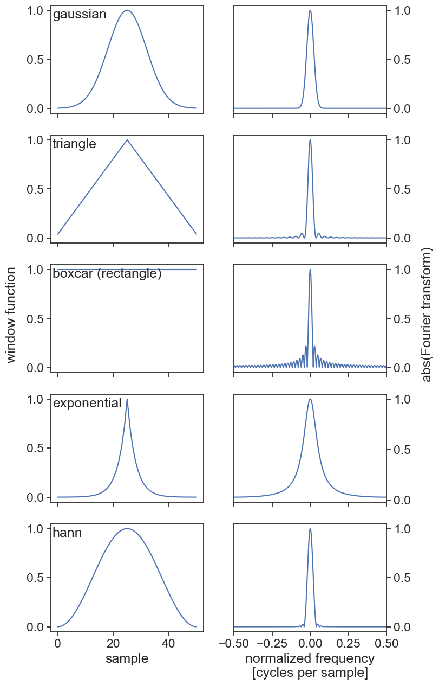
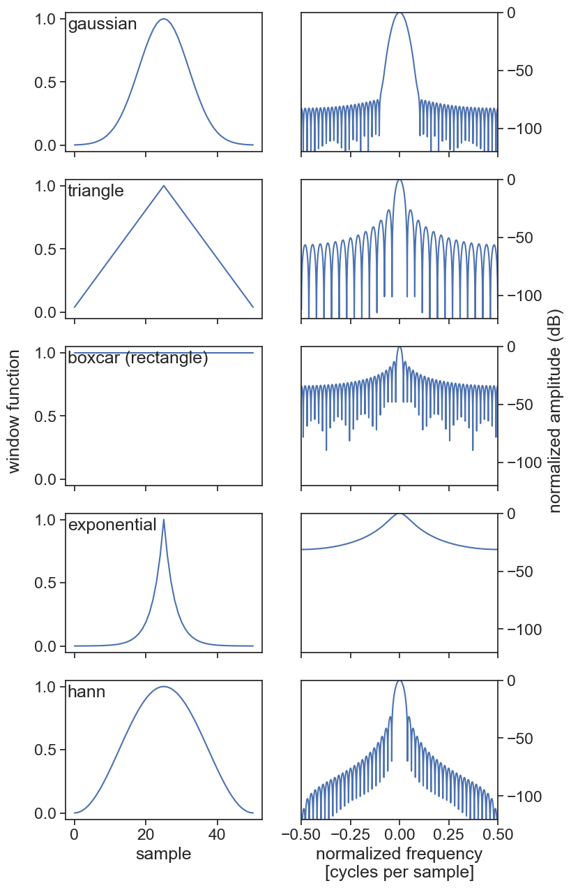
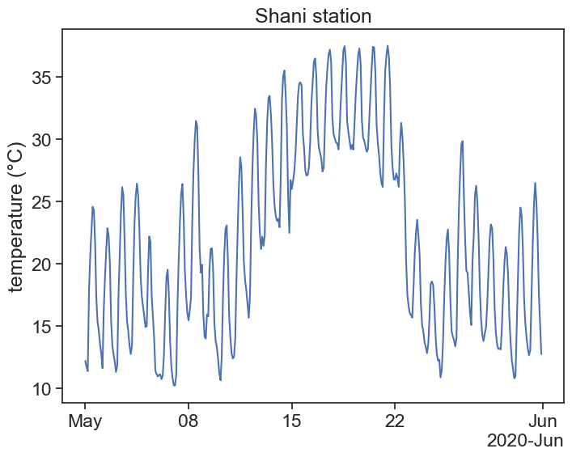
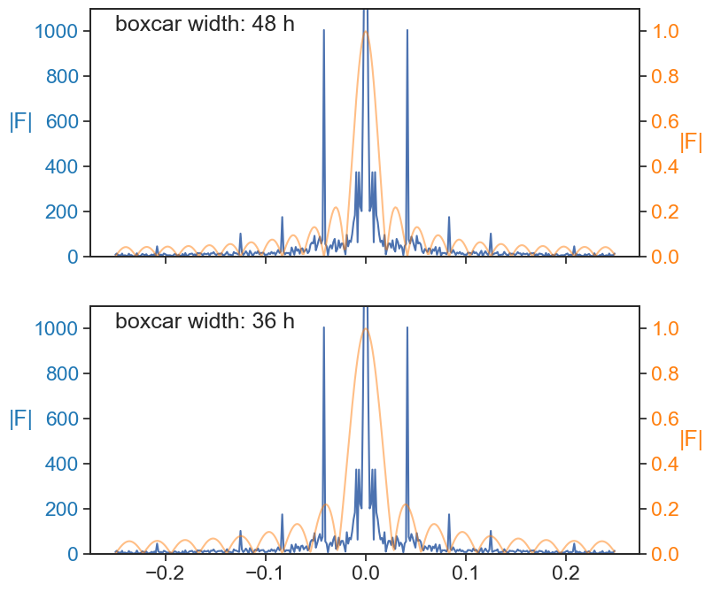

Way back then, we learned about sliding windows and how to take advantage of them for smoothing a signal. We did not give much emphasis to this then, but the mathematical operation of sliding a window with a given kernel over a signal is called convolution. Let’s recall what is the definition of convolution.
The definition of a convolution between signal f(t) and kernel k(t) is
(f * k)(t) = \int f(\tau)k(t-\tau)d\tau.
The expression f*k denotes the convolution of these two functions. The argument of k is t-\tau, meaning that the kernel runs from left to right (as t does), and at every point the two signals (f and k) are multiplied together. It is the product of the signal with the weight function k that gives us an average. Because of -\tau, the kernel is flipped backwards, but this has no effect to symmetric kernels.
47.1 theorem
The Fourier transform of a convolution is the product of the Fourier transforms of each convolved functions.
In mathematical language:
F[f * g] = F[f] \cdot F[g]
This means that if we want to smooth a function f by averaging a sliding window of a given kernel g, we can instead compute the Fourier transform of f and g separately, multiply them together, and finally perform an inverse Fourier transform of this product:
Sometimes it is computationally more efficient to compute Fourier transforms than to compute running averages. This is not obvious at all, but there are very fast algorithms that can calculate the Fourier transform in a heartbeat. As we will see later, the numpy.convolve tool calculates running averages (convolutions) the usual way for short arrays, and automatically switches its method when it evaluates that using the Fourier transform might be faster (usually for arrays longer than 500 points).
Thinking about the Fourier signature of different kernels can be extremely useful to achieve precise goals, such as filtering out specific frequencies from your signal, or to avoid undesirable effects of using a sliding window when you don’t exactly know what you are doing.
47.2 kernels and their spectral signatures
import stuff
import numpy as npfrom scipy import signalfrom scipy.fft import fft, fftshiftimport matplotlib.pyplot as pltimport scipyimport pandas as pdimport seaborn as snssns.set(style="ticks", font_scale=1.5) # white graphs, with large and legible lettersimport matplotlib.dates as mdatesimport warningswarnings.filterwarnings("ignore")
n =5fig, ax = plt.subplots(n, 2, figsize=(8,3*n), sharex='col')for i inrange(n): plot_window_response(names[i], windows[i], args[i], ax[i,0], ax[i,1])fig.text(0.02, 0.5, 'window function', va='center', rotation='vertical')fig.text(0.98, 0.5, 'abs(Fourier transform)', va='center', rotation='vertical')ax[n-1,0].set(xlabel="sample")ax[n-1,1].set(xlabel="normalized frequency\n[cycles per sample]");

plot window function and reponse
n =5fig, ax = plt.subplots(n, 2, figsize=(8,3*n), sharex='col')for i inrange(n): plot_window_response(names[i], windows[i], args[i], ax[i,0], ax[i,1], resp="dB")fig.text(0.02, 0.5, 'window function', va='center', rotation='vertical')fig.text(0.99, 0.5, 'normalized amplitude (dB)', va='center', rotation='vertical')ax[n-1,0].set(xlabel="sample")ax[n-1,1].set(xlabel="normalized frequency\n[cycles per sample]");

47.3 theorem in action
Let’s apply the convolution theorem to a real-life time series. See below the temperature of the Shani station over the month of May 2020.
load temperature data and plot it
def concise(ax):""" Let python choose the best xtick labels for you """ locator = mdates.AutoDateLocator(minticks=3, maxticks=7) formatter = mdates.ConciseDateFormatter(locator) ax.xaxis.set_major_locator(locator) ax.xaxis.set_major_formatter(formatter)df = pd.read_csv('shani_temperature.csv', index_col='datetime', parse_dates=True)df = df.loc['2020-05-01':'2020-05-31', 'T'].to_frame()fig, ax = plt.subplots(1, 1, figsize=(8,6))# df['T'].plot(ylabel="temperature (°C)",# xlabel="",# title="Shani station")ax.plot(df['T'])ax.set(ylabel="temperature (°C)", title="Shani station")concise(ax);

# according to the dataframe, temperature is sampled every 2 hoursdt =2.0# hoursN =len(df)time = np.arange(N) * dtfft_orig = scipy.fft.fft(df['T'].values)# this shifted version is useful only for plotting, it looks nicerfft = scipy.fft.fftshift(fft_orig)xi = scipy.fft.fftfreq(N, dt)xi = scipy.fft.fftshift(xi)fft_abs = np.abs(fft)# boxcar (rectangular) windowwidth_hours =24width_points =int(width_hours/dt)boxcar = signal.windows.boxcar(width_points)# integral of boxcar must be 1.0 if we want to take an averageboxcar = boxcar / np.sum(boxcar)# we need an array of the same size of the original signalboxcar_array = np.zeros(N)# boxcar is placed at the beginningboxcar_array[:width_points] = boxcar# if we were to leave the boxcar array as above, the average would not be centered# let's move the boxcar a half width to the leftboxcar_array = np.roll(boxcar_array, -width_points//2)# compute Fourier transform of boxcarfft_boxcar_orig = scipy.fft.fft(boxcar_array)# shift it only so we can plot it laterfft_boxcar = scipy.fft.fftshift(fft_boxcar_orig)fft_abs_boxcar = np.abs(fft_boxcar)# this is the important part# 1. we multiply the signal's fft with the window's fftfft_filtered = fft_orig * fft_boxcar_orig# 2. we apply an inverse Fourier transform. we take only the real part# because usually the inverse operation yields really small imaginary componentsfiltered = scipy.fft.ifft(fft_filtered).real# for comparison's sake, let's apply the usual rolling averagedf['rolling1day'] = df['T'].rolling('24H', center=True).mean()
power spectrum of signal and window function
fig, ax = plt.subplots(3, 1, figsize=(8,8), sharex=True)ax[0].plot(xi, fft_abs, label="temperature", color="tab:blue")ax[0].set_ylabel("|F|", color="tab:blue", rotation="horizontal", labelpad=10)ax20 = ax[0].twinx()ax20.plot(xi, fft_abs_boxcar, label="boxcar", color="tab:orange", alpha=0.5)ax20.set_ylabel("|F|", color="tab:orange", rotation="horizontal", labelpad=10)fig.legend(frameon=False, ncol=2,bbox_to_anchor=(0.5,0.95),loc="upper center",)[t.set_color("tab:blue") for t in ax[0].yaxis.get_ticklines()][t.set_color("tab:blue") for t in ax[0].yaxis.get_ticklabels()][t.set_color("tab:orange") for t in ax20.yaxis.get_ticklines()][t.set_color("tab:orange") for t in ax20.yaxis.get_ticklabels()]ax[1].plot(xi, fft_abs, label="temperature", zorder=1)ax[1].set_ylabel("|F|", color="tab:blue", rotation="horizontal", labelpad=10)ax21 = ax[1].twinx()ax21.plot(xi, fft_abs_boxcar, label="boxcar", color="tab:orange", alpha=0.5)ax21.set_ylabel("|F|", color="tab:orange", rotation="horizontal", labelpad=10)ax[1].set(ylim=[0, 1100])ax21.set(ylim=[0,1.1])[t.set_color("tab:blue") for t in ax[1].yaxis.get_ticklines()][t.set_color("tab:blue") for t in ax[1].yaxis.get_ticklabels()][t.set_color("tab:orange") for t in ax21.yaxis.get_ticklines()][t.set_color("tab:orange") for t in ax21.yaxis.get_ticklabels()]ax21.text(-0.25, 0.80, "zoom in of\nthe graph above")ax[2].plot(xi, np.abs(scipy.fft.fftshift(fft_filtered)), color="black")ax[2].text(-0.25, 2500, "product of the\ntwo transforms")ax[2].text(-0.25, 5000, r"$F=\quad \cdot$")ax[2].text(-0.205, 5000, r"$F$", color="tab:blue")ax[2].text(-0.17, 5000, r"$F$", color="tab:orange")ax[2].text(0.03, 4000, "all harmonics were\nsurgically removed\nby F[boxcar]")ax[2].set(xlabel="frequency (1/hour)");
What would we get if we changed the width of the window? In the example above the boxcar window had a width of 1 day. Let’s see what happens when we chose windows of width 2 days and 1.5 days.
We see that when the width is an integer multiple of the fundamental period of oscillation of the signal, the filtering will eliminate all the harmonics. However, if we are not careful with our window width choice (e.g. 36 hours), many of the harmonics will be left untouched!
power spectrum of signal and window function
fig, ax = plt.subplots(2, 1, figsize=(8,8), sharex=True)ax[0].plot(xi, fft_abs, label="temperature")ax[0].set_ylabel("|F|", color="tab:blue", rotation="horizontal", labelpad=10)ax21 = ax[0].twinx()ax21.plot(xi, fft_abs_boxcar_2days, label="boxcar", color="tab:orange", alpha=0.5)ax21.set_ylabel("|F|", color="tab:orange", rotation="horizontal", labelpad=10)ax[0].set(ylim=[0, 1100])ax21.set(ylim=[0,1.1])[t.set_color("tab:blue") for t in ax[0].yaxis.get_ticklines()][t.set_color("tab:blue") for t in ax[0].yaxis.get_ticklabels()][t.set_color("tab:orange") for t in ax21.yaxis.get_ticklines()][t.set_color("tab:orange") for t in ax21.yaxis.get_ticklabels()]ax[0].text(-0.25, 1000, "boxcar width: 48 h")ax[1].plot(xi, fft_abs, label="temperature")ax[1].set_ylabel("|F|", color="tab:blue", rotation="horizontal", labelpad=10)ax21 = ax[1].twinx()ax21.plot(xi, fft_abs_boxcar_15days, label="boxcar", color="tab:orange", alpha=0.5)ax21.set_ylabel("|F|", color="tab:orange", rotation="horizontal", labelpad=10)ax[1].set(ylim=[0, 1100])ax21.set(ylim=[0,1.1])[t.set_color("tab:blue") for t in ax[1].yaxis.get_ticklines()][t.set_color("tab:blue") for t in ax[1].yaxis.get_ticklabels()][t.set_color("tab:orange") for t in ax21.yaxis.get_ticklines()][t.set_color("tab:orange") for t in ax21.yaxis.get_ticklabels()]ax[1].text(-0.25, 1000, "boxcar width: 36 h");

To sum up, let’s see what happens when we chose different window widths.